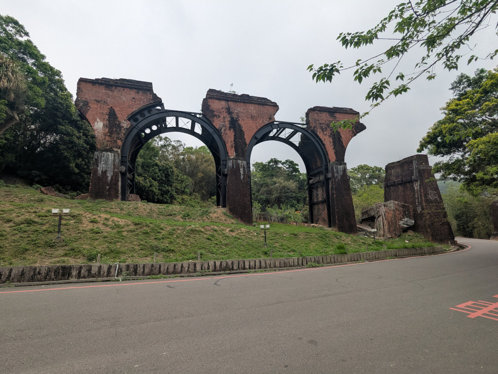
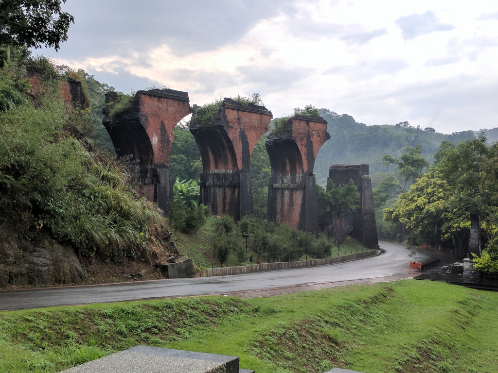
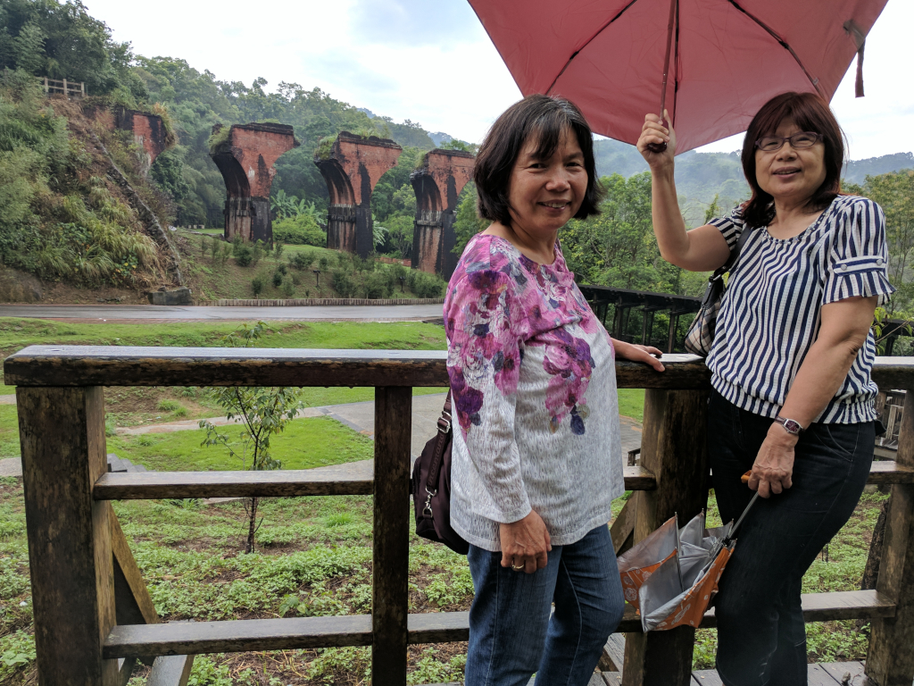

|
April 15, 2026 Mei-O and I, along with Zhiwei (who drove us there), Mingqi, and Meihui, went to see the old 龍騰斷橋 (Longteng Broken Bridge) in Miaoli County today, not far from Sanyi where we had lunch. No one other than me wanted to stop and walk around the bridge and the grounds surrounding it, so we just drove by. I was able to get out of the car and take a couple of quick pictures,  then I got back in the car and we left. Things looked quite different from what I remembered from our last visit on July 6, 2017, when we were here with Meihui, Wenshuang, and her boyfriend (now husband), so I looked at my pictures from back then. This one in particular struck me.  It shows the bridge without the steel arch reinforcements now helping to hold the ruins up. But more importantly was the fact that the point I took the 2017 photo from, a wooden platform that we hung out on under umbrellas to wait for the light rain to stop  was no longer there. It was apparently leveled and eliminated. Up the road a bit, a row of shops selling souvenirs and snacks, similar to what we saw at 三義鄉勝興車站 (Sanyi Township ShengXing Station) noteOddly
enough, I didn't notice the row of shops along the road. (I was probably looking down the road intently staring at the bridge.)
When I asked
appeared to be the main attraction - which was why no one wanted to stop.
Being there in the light rain and mist nine years ago was special and somewhat surreal for me. Today's visit, which I was
really looking forward to, turned out to be quite a disappointment.
|